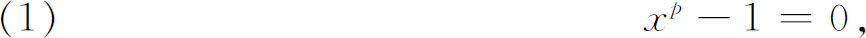
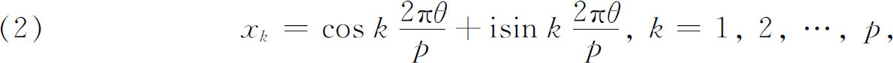
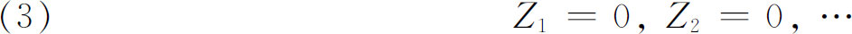
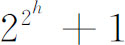
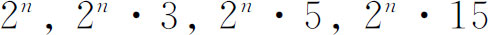
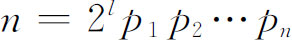
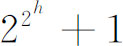

2．二项方程
我们已经讨论过（第25章第2节）欧拉、范德蒙德、拉格朗日和鲁菲尼为了代数地求解四次以上的方程和二项方程xn-1＝0所作的无效努力。一个重要的成就是由高斯完成的。在他的《算术研究》(1)的最后一节，高斯考察了方程

这里p是素数(2)。这个方程通常称为分圆方程或对圆进行分割的方程。上面的术语参考了下述事实：由棣莫弗定理，这个方程的根是

而这些复数xk当几何地作出图像时就是单位圆上的正p边形的顶点。
高斯证明了这个方程的根可用一个方程序列

的根有理地表示出来，这些方程的系数是这序列中前面的方程的根的有理函数。（3）中方程的次数正好是p-1的素因子。对每个因子，即使是重复的因子，有一个Zi。而每个Zi＝0都能用根式解出，于是方程（1）也能同样解出。
这个结果对于代数地求解一般的n次方程的问题当然具有重要的意义，它表明了某些高次方程能用根式解出，例如，设5是p-1的一个因子，则有一个五次方程，或设7是p-1的一个因子，则有一个七次方程能用根式解出。
这结果对作正p边形的几何问题也具有重要性。如p-1没有异于2的因子，则正p边形可用直尺和圆规作出，因为（3）中每个方程的次数都是2，而它的每个根都可通过它的系数作出。这样我们就能够作出边数为素数p而p-1是2的方幂的全部正多边形。这样的素数是3，5，17，257，65-537，…。换个说法，如p是

形式的素数(3)，正p边形就能作出。高斯评论说（Art． 365），虽然3，5，15边的正多边形以及从它们直接得出的那些———如
（这里n是正整数）的正多边形的几何作图在欧几里得时期就已知道了，但在2-000年的期间里，没有发现新的可作图的正多边形，而且几何学家们曾一致声称没有别的正多边形能够作得出来。高斯料想到他的结果可能导致寻找新的可作图的边数为素数的正多边形的种种努力。于是他警告说：“每当p-1包含2以外的素数因子，我们就得到高次方程，就是说，如3是p-1的一次或多次因子，就得到一个或多个三次方程。如p-1能被5除尽，就得到一个五次方程等。而且我们能完全严密地证明这种高次方程不能避免或不能使得它们依赖于低次方程；虽然这项工作的限制不允许我们在这里给出证明，但我们还是认为注意这个事实是必要的，这是为了使人们除了由我们的理论所给出的那些多边形以外不要去寻找别的（边数为素数的）多边形的作图，例如7，11，13，19边的多边形，白白耗费他的时间。”
然后，高斯考虑任何n边多边形（Art．366）并且断言，一个正n边形是可作图的，当且仅当

，这里p1，p2，…，pn是形为
的不同素数，而l是任意正整数或0。这个条件的充分性确实容易从高斯关于边数为素数的多边形的工作得出，但是必要性却一点也不显然，并且没有被高斯证明(4)。从1796年起，高斯就对正多边形的作图发生兴趣，那时他就构思17边形可以作图的第一个证明。关于这个发现有一段值得重述的故事。这个作图问题早已是著名的问题了。一天，高斯带着这个多边形可作图的证明到格丁根大学他的教授克斯特纳那儿去，克斯特纳不相信，并企图赶走高斯，很像今天的大学教师们赶走三等分角的人一样。克斯特纳不愿花时间检查高斯的证明，并想从中寻找假定上的错误，他告诉高斯，这个作图法是不重要的，因为实际的作图法是熟知的。当然克斯特纳知道实际的或近似的作图法的存在是与理论问题不相干的。高斯为了使克斯特纳对他的作图法感兴趣，就指出他曾经解出了一个17次的代数方程。克斯特纳回答说这是不可能的。但高斯答辩说，他把这个问题化简成解一个低次的方程。克斯特纳嘲笑说：“噢，好，我已经这样做了。”因克斯特纳也炫耀过他自己的诗集，高斯后来就用赞美克斯特纳是数学家中最好的诗人和诗人中最好的数学家的话作为回敬。